Illustrator
Key visuals, layouts, vector systems and production-ready artwork.
主视觉、版式、矢量系统及可制作文件。
Choose your reading language.
请选择浏览语言。
Marketing and creative project professional with over 10 years of experience in integrated brand marketing, event planning, art exhibitions and spatial curation.
拥有十年以上整合品牌营销、活动策划、艺术展览与空间策展经验的市场及创意项目管理人。
Jasper works at the point where creative ideas become real environments, schedules and visitor touchpoints, balancing resource integration, visual direction, client communication and on-site execution.
邵钰坤的工作集中在创意概念如何变成真实空间、时间表与访客体验的过程，平衡资源整合、视觉统筹、客户沟通与现场执行。
His design background supports independent development of key visuals, brand identity systems, wayfinding, presentation materials and social media visuals.
平面设计背景让他能够独立推进主视觉、品牌识别系统、导视、提案物料与社交媒体视觉。
Key visuals, layouts, vector systems and production-ready artwork.
主视觉、版式、矢量系统及可制作文件。
Image adjustment, mockups and visual composites.
图片处理、效果图及视觉合成。
Campaign recaps, references and presentation support.
活动回顾、参考资料及提案辅助剪辑。
Photo selection and tone control.
图片筛选与色调控制。
Documents, planning tables and client summaries.
文件、计划表与客户沟通整理。
Clear decks for creative decision-making.
将创意想法整理成清晰提案。
Theme, visitor journey, workflow and on-site coordination.
主题、动线、流程与现场协调。
Key visuals, identity, wayfinding and production files.
主视觉、识别、导视与制作文件。
Campaign positioning, audience logic and retail activation.
活动定位、客群逻辑与商业活动。
Bilingual copy direction and campaign-ready visuals.
双语文案方向与传播视觉。
Decks, mockups and diagrams for quick decisions.
提案、效果图与图示辅助决策。
Toronto, Canada / Class of 2010. Bachelor of Science with Honours, majoring in Psychology.
加拿大多伦多 / 2010届。 心理学荣誉理学士。
This background supports the way Jasper thinks about audiences, visitor movement, emotional touchpoints and how people understand a brand through space.
这一背景影响邵钰坤对受众、动线、情绪触点及品牌空间理解方式的思考。
Creative Project & Business Development Manager. Brand exhibitions, artist collaborations and business development.
商业拓展与创意项目经理。负责品牌授权、艺术家合作与大型展览项目执行。
Marketing Manager for urban renewal work covering cultural research, visual positioning and district campaigns.
市场推广经理。参与玉林东路城市更新项目，推进街区文化挖掘、视觉定位与推广策划。
Marketing and Design Manager for commercial projects, brand systems and launch communication.
市场推广及设计经理。负责商业项目品牌视觉体系、推广活动与设计管理。
Co-founder of a multicultural event planning and brand promotion company.
创办人。合伙创立多元文化活动策划与品牌推广公司，服务本地亚裔社区与亚洲品牌。
Children's Play Officer supporting play services, education programmes and advocacy materials.
儿童游戏工作主任。负责社区游戏车服务、教育活动与倡议项目执行。
Marketing Assistant for mall events, exhibitions, brand collaborations and bilingual promotional copy.
市场推广助理。协助大型节庆活动、展览及品牌合作项目筹备与执行。
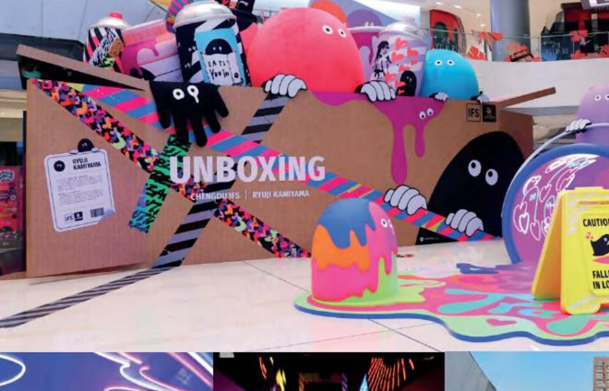
Ryuji Kamiyama's Ratface world in Chengdu.
神山隆二 Ratface 世界观沉浸项目。
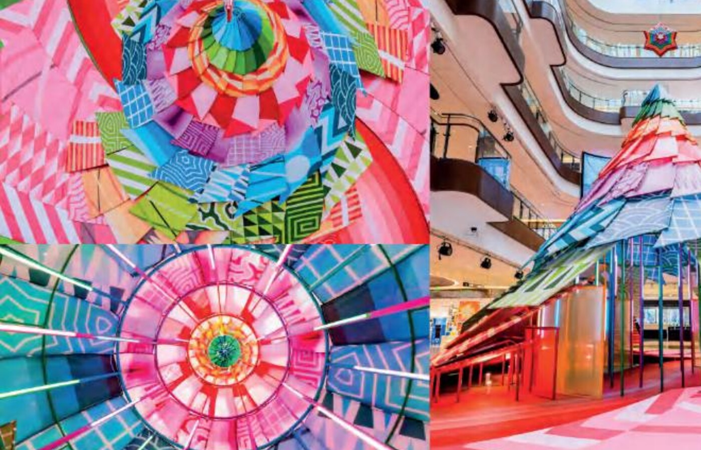
BEASTMAN Christmas art and light experience.
艺术光影圣诞季。
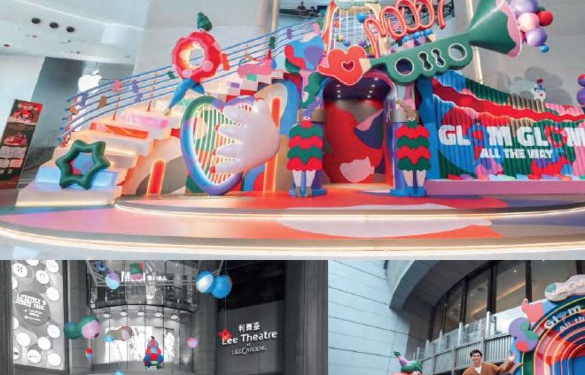
Jirayu Koo's winter party installation.
冬日享「乐」派对。
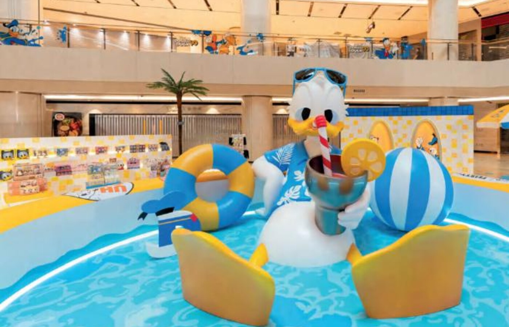
Donald Duck 90th summer pool-party activation.
欢迎来到90派对「鸭」。
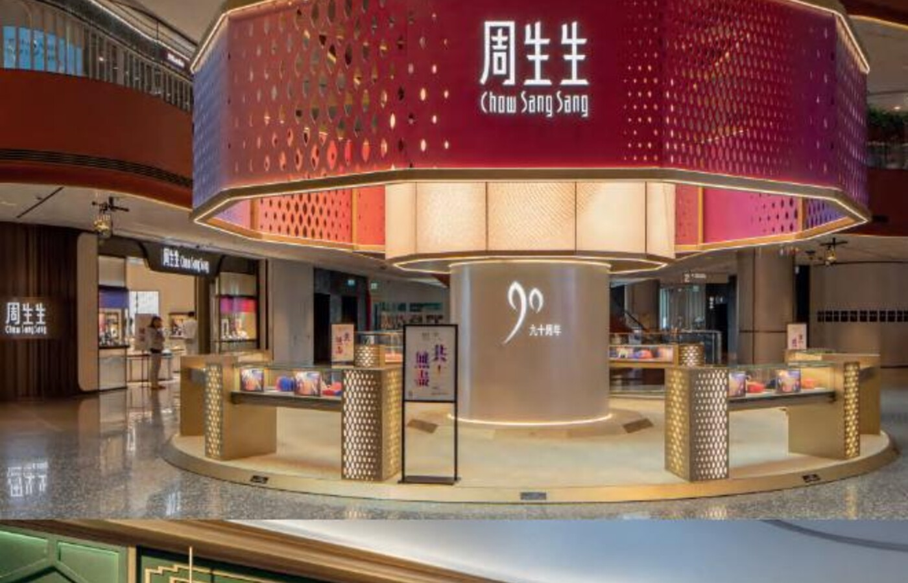
Chow Sang Sang 90th jewellery story exhibition.
周生生90周年珠宝故事展。
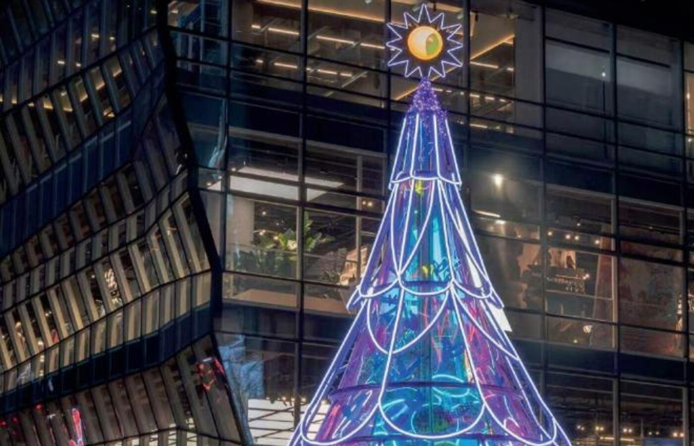
SMILEY x Ryuji Kamiyama global launch.
SMILEY x 神山隆二首发活动。
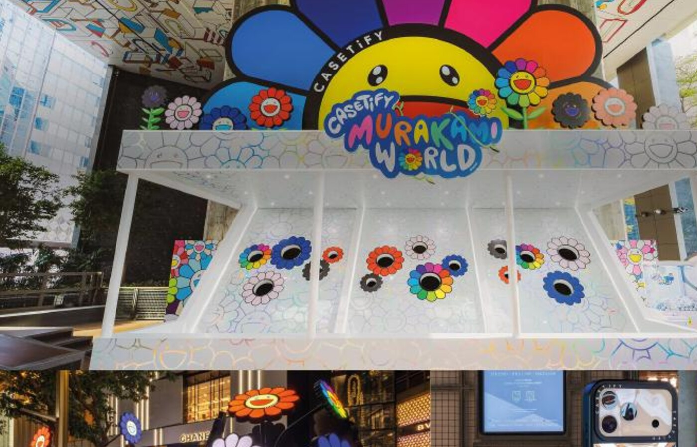
Takashi Murakami x CASETiFY retail showcase.
村上隆 x CASETiFY 展示项目。
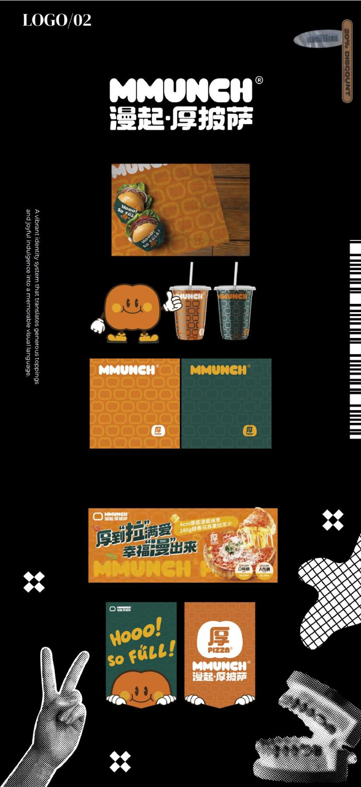
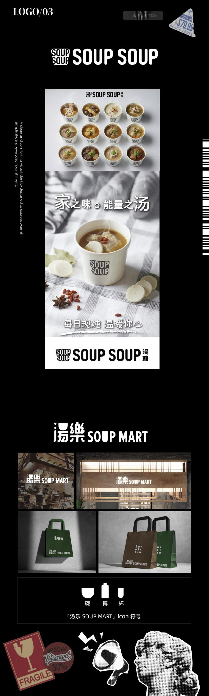
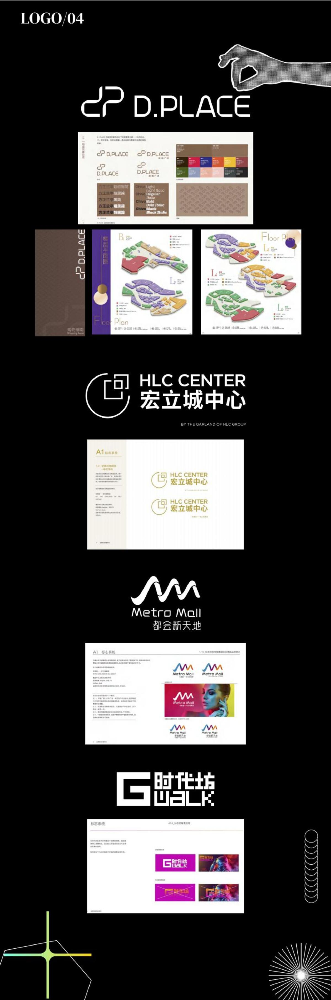
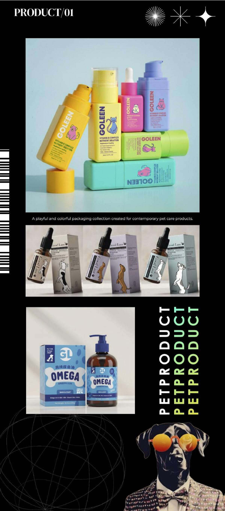
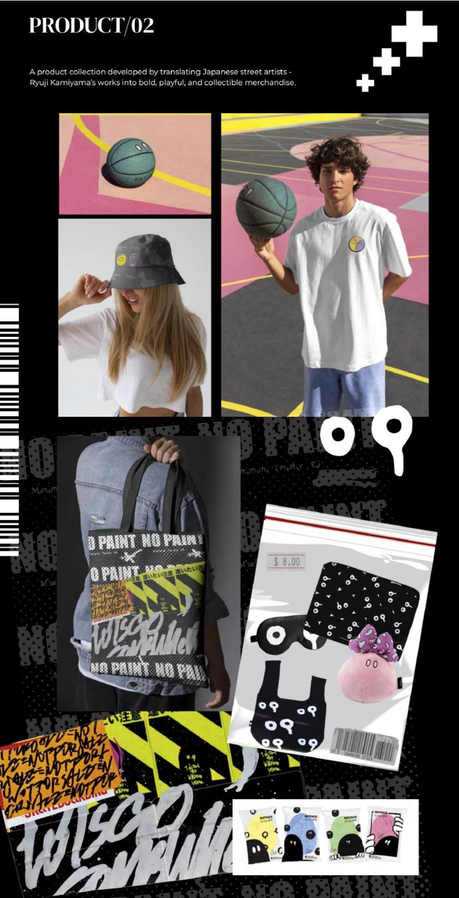
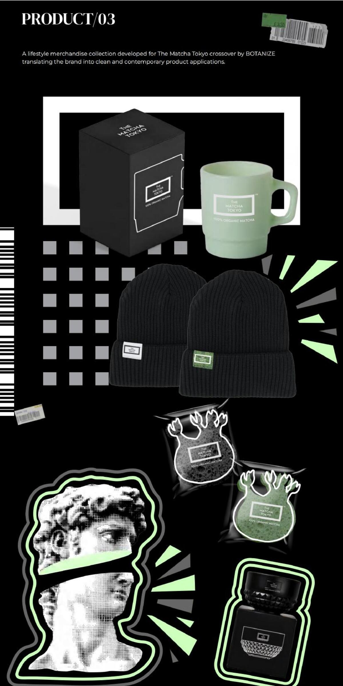
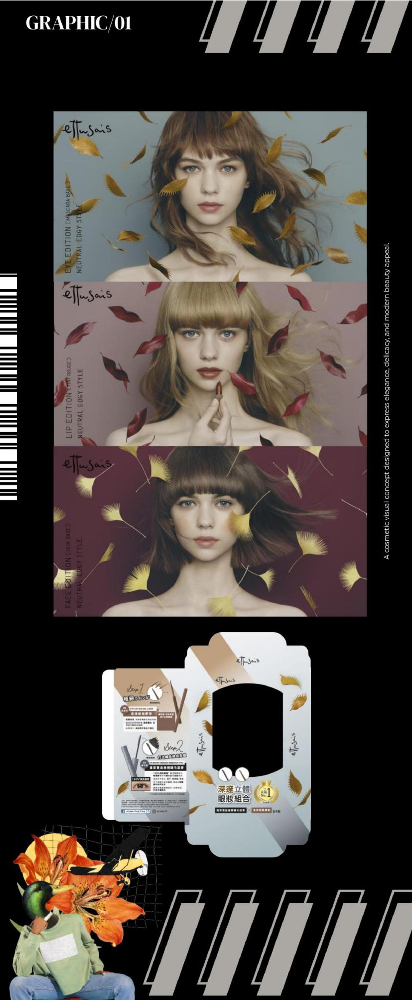
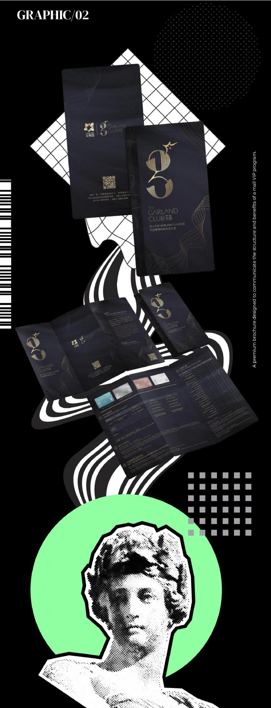
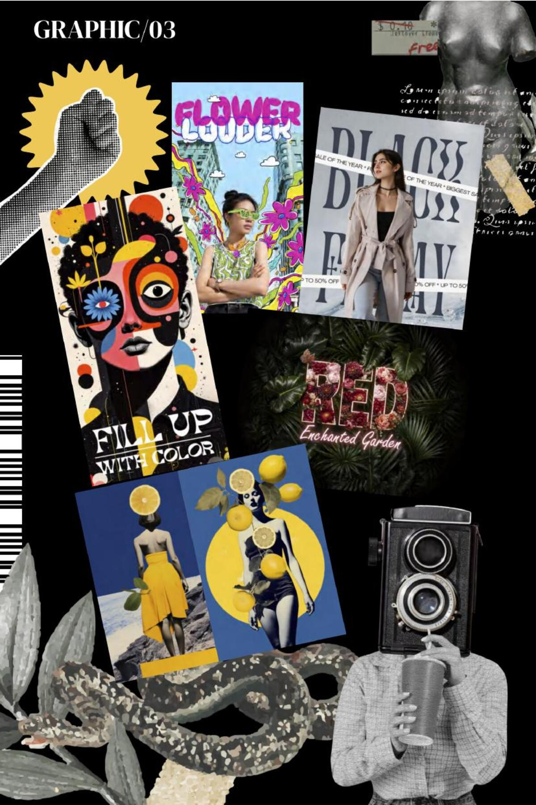